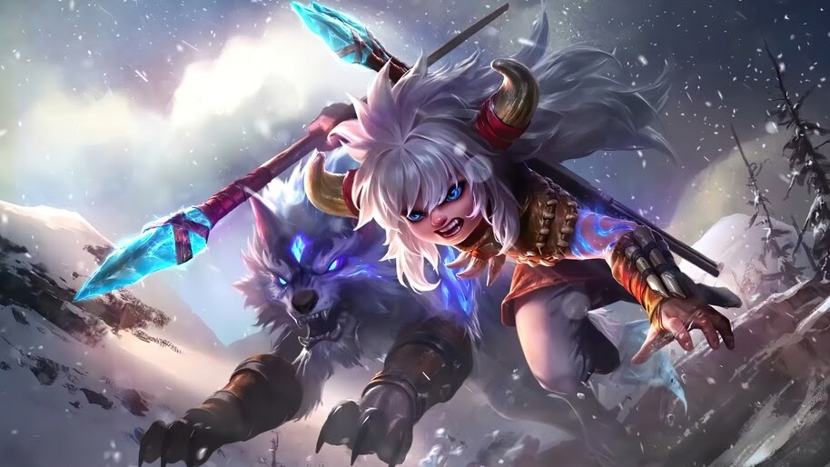

|  | |
|
Сабер
|
|
|
Пополь и Купа - герой класса стрелок. Его особенностью является питомец - Купа, благодаря которому и наносится весь урон.
|
|
"Йо-Йо!Пора побить их, Купа!"
-Пополь |
 |
Дата выхода: - 21 апреля 2020 года |
|
| История героя: | |
| Фельданы — обычное кочевое племя в центре Северной Долины. Как и многие местные жители, они расположились недалеко от леса и живут мирной и неспешной жизнью охотников. Но есть одно исключение. Пополь — озорной мальчик, известный опытный шутник и маленький авантюрист племени, всегда кажется в центре внимания. В отличие от других спокойных и сдержанных жителей Северной Долины, он полон энергии и воображения. Благодаря воинской традиции Северной долины, Пополь с детства овладел искусством метания копья. Он часто охотится со взрослыми и возвращается с тележкой, полной добычи. Слушать, как взрослые поют песни о легендарных героях после выпивки — его любимое занятие. Он мечтает стать одним из них, чтобы и о нём пели другие, называя, например Пополь Бесстрашный. Однако его соплеменники не воспринимают всерьез его амбиции, смеются над ним, как над какой-то детской мечтой и для Пополя mobile legends это невыносимо. Чтобы произвести впечатление на других, он устраивает им всевозможные хитроумные розыгрыши, но узнаёт лишь, что жители деревни, особенно дети, считает его ненормальным и держаться от него подальше. Чем больше от него отворачиваются, тем больше ему хочется привлечь к себе внимание, вытворяй ещё больше шалостей. Однако это приводит к противоположному результату. В конце концов, у него вообще не останется друзей. Одинокие отчаявшийся, он решает сделать что-то необычное, чтобы изменить свой образ раз и навсегда. Тёмной ночью Пополь покидает деревню и отправляется в горы. Он планирует убить свирепого ледяного волка в одиночку, чтобы произвести впечатление на остальных. Расхаживая по густому лесу и осматривая окрестности, он теряется в темноте и попадают в ловушку. Первое, что он видит на дне ямы — это пара зелёных горящих глаз, которые пугают его до смерти. А когда Луна осветила ловушку, он увидел и обладателя этих глаз — пойманного морозного волка, которому он позже даёт имя Купа. Одна из его передних лап зажата звериным капканом и из-за голода он ей два может пошевелиться. Пополь мог бы тогда убить Купу, но когда он поднял копьё, то увидел в глазах волка такое же одиночество, которое поглощала его самого. Если он убьёт Купу, то останется совершенно один в темноте ловушки. Поколебавшись, он опустил копьё и попытался поладить с Купой. Сначала они были на страже и относились друг другу враждебно. Но время шло и две одинокие души, наконец начинают ладить. Звериная ловушка становится мостом для их дружбы. Возможно, из-за одиночества Пополь mobile legends относится к нему как к слушателю и товарищу по играм. Он даже осмеливается бросить снежок ему на голову. В этот момент Купа почти умирает от голода. Пополь некоторое время колеблется, прежде чем поделиться едой, которую он нёс, с умирающим Купой. Купу спасает еда Пополя. Ему кажется, что все люди холодные и безжалостные. Это всегда вопрос жизни и смерти между ними и морозными волками. Но Пополь совсем другой. Охотясь один в лесу с самого рождения, Купа впервые чувствуют доброту и тепло от Пополя. Проходят дни и между ними завязывается дружба. Первыми, кто их нашёл были не люди, пришедшие спасать, а стая стервятников. Они слетаются в ловушку и начинают атаковать. Пополь бросает копье в стервятников, но не может отбиться от всех. В тоже время Купа бесцельно сражается только одной свободной лапой. Если их выносливость истощиться — они станут пищей для стервятников, непрерывно преследовавших их. В момент опасности Пополь предпринимает замечательное решение — он бросает копье и напрягает все свои силы, чтобы разорвать звериную ловушку, чтобы помочь Купе бежать. Он оставляет свою спину без защиты и вдруг его ловит стервятник и поднимает из ловушки в воздух. Как только Пополь теряет надежду, раздаётся громоподобный рёв. Купа выпрыгивает из ямы и кусает стервятника, освобождая Пополя от хватки. Теперь они сражаются бок о бок, Пополь и Купа mobile legends, новые друзья, демонстрируют невероятные взаимопонимание и отбивает всех стервятников навсегда. С этого дня они становятся лучшими партнерами в приключениях. они путешествуют по замерзшей земле и начинает новую главу приключений. | |
Слабые и сильные стороны: Слабые:
Сильные:
Сборка героя:
Эмблемы
Выбор линии:
Пополь и Купа, достаточно сильны в начале. Для них больше всего подойдет верхняя и нижняя линии.
Описание навыков:
~Пополь всегда под надежной защитой. Пополь под охраной Купы
Пассивное: Мы-друзья
Герой всегда сражается бок о бок со своим лучшим партнером Купой (волк).
После 4 атак Kупы по врагу, Следующая базовая атака Пополя получит бонус (+200% физ)
Вне боя, Купа восстанавливает 10% оз себе.При смерти Купы, Пополь может молится в течении 3 секунд и возродить его. Перезарядка-45 секунд

1 Навык: Кусай их, Купа!
Пополь приказывает Купе укусит цель, нанося урон 320 + (80% физ) и затем атакует в течении 3 секунд.
Альфа форма: Купа наносит мгновенно три удара с руки и оглушает врага на 1 секунду.

2 Навык: Помоги, Купа!
Пополь призывает к себе Купу и получает щит, равный 350 +(15% физ) и будет помогать Пополю атаковать ближайших врагов в течении 3 сек.
Альфа форма: Купа мчится к Пополю и подкидывает всех врагов возле Пополя на 0,6 сек и наносит урон.

3 Навык: Сюрприз Пополя
Пополь выставляет ловушку на 60 сек. Которая взрывается и замедляет всех в своей зоне в течении 4с на 25%. Максимально количество активных бомб – 3

Ультимативная способность: Мы-злимся!
Пополь и Kупа приходят в ярость на 12 секунд и получают 30% к скорости атаки и 15% к скорости передвижения.
Купа входит в состояние Альфа-волка и получает +2000 к ОЗ +50 к физ. Атаке и усиливает свою защиту

Альфа форма
1 Навык(альфа форма): Кусай их, Купа!
Пополь приказывает Купе укусит цель, нанося урон 320 + (80% физ) и затем атакует в течении 3 секунд.
Альфа форма: Купа наносит мгновенно три удара с руки и оглушает врага на 1 секунду.

2 Навык(альфа форма): Помоги, Купа!
Пополь призывает к себе Купу и получает щит, равный 350 +(15% физ) и будет помогать Пополю атаковать ближайших врагов в течении 3 сек.
Альфа форма: Купа мчится к Пополю и подкидывает всех врагов возле Пополя на 0,6 сек и наносит урон.

|